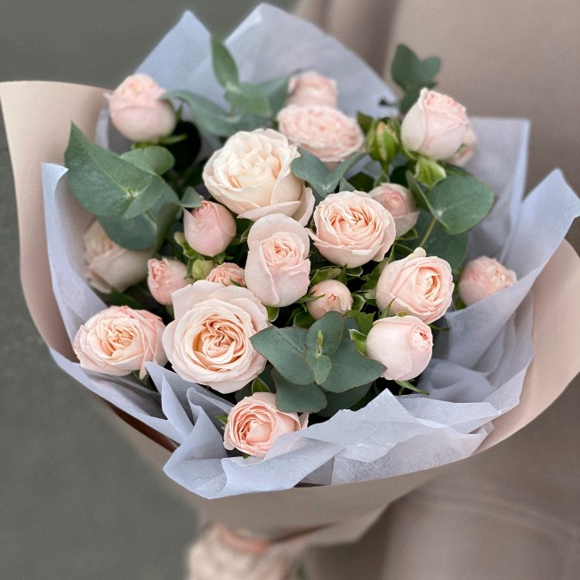
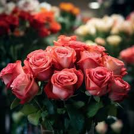
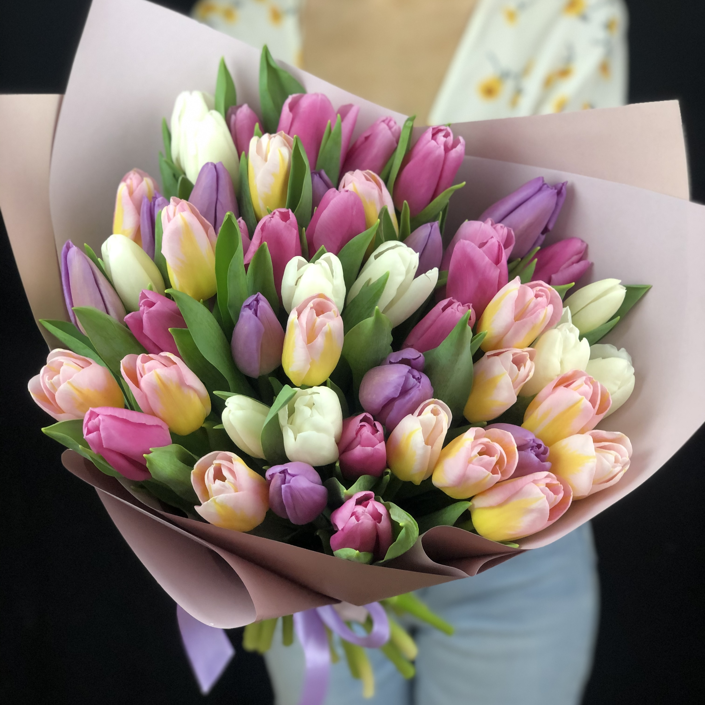

Пионовидные розы
Розы
Роза - собирательное название видов и сортов представителей рода Шипо́вник.


Тюльпаны
Тюльпа́н — род многолетних травянистых луковичных растений семейства Лилейные, в современных систематиках включающий более 80 видов. Центр происхождения и наибольшего разнообразия видов тюльпанов — горы северного Ирана, Памиро-Алай и Тянь-Шань.
Пионы
Пио́н — род травянистых многолетников и листопадных кустарников. Единственный род семейства Пионовые, ранее род относили к семейству Лютиковых. Пионы цветут в конце весны, ценятся садоводами за пышную листву, эффектные цветы и декоративные плоды.